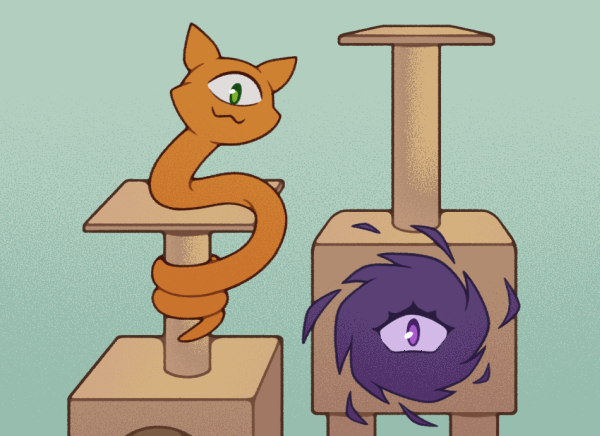

About Us
Cosmic Critters was founded in 20XX by famed Extraterrestrial Zoologist, [REDACTED]. Since the early days, we've made it our mission to find forever homes for misplaced and abandoned creatures from all reaches of the universe.
We work with experts in the field to ensure that all creatures under our care receive optimal care, regardless of species. We also run community outreach programs to bring that expert knowledge to the public.
Compared to our competitors, pets adopted from Cosmic Critters are happier, healthier, and 20% less likely to plot world domination.
